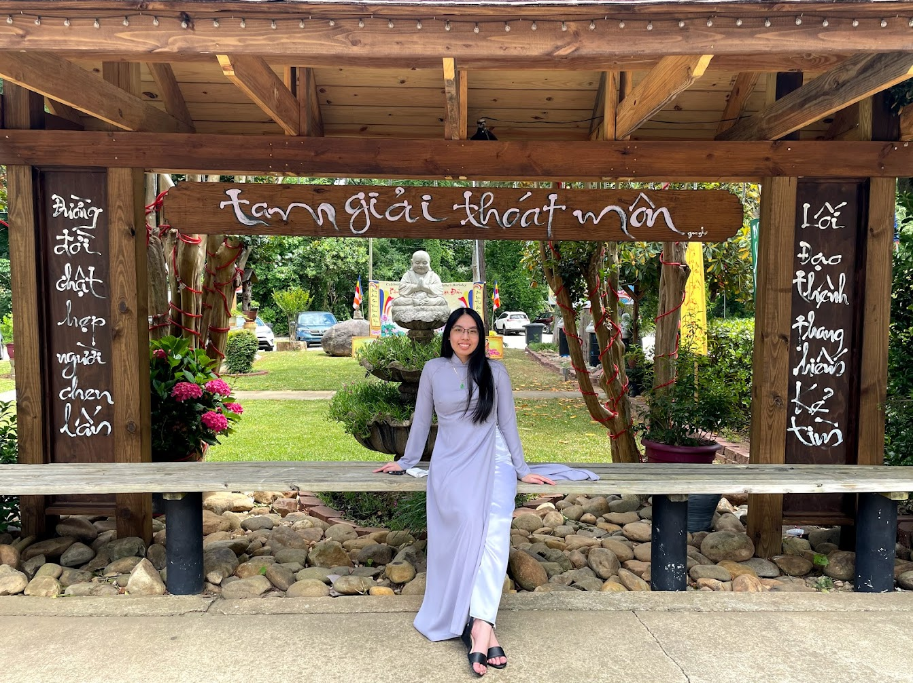

Minh Anh sitting on a bench at Lien Hoa Temple
Personal background: I was born in Ho Chi Minh City, Vietnam, but moved to Charlotte when I was 2 years old. I like to consider myself a Charlotte native since I grew up here most of my life. Initially, I wanted to be a nurse, but ultimately went with computer science because of my interest in technology.
Professional: Due to my parents, I couldn't start a job until after high school. However, I did do a few internships before graduating. One was a being a volunteer at a nursing home (before career change) and then two were coding camps. My first actual job was being a barista at a boba shop in 2019.
Academic background: I graduated from Harding University High School. Currently pursuing a Bachelor's in Computer Science with a concentration in Web and Mobile App Development at UNCC.
Background in the subject matter of this course: I've used computers since I was young, but discovered programming during my late junior-early senior year of highschool. It was in college that I got more interested in web development which led to me choosing this concentration!
Primary Computer Platform: Windows 10 for home and school.
Courses I'm taking and reason for each:
ITIS 3135 - Web Design & Development - to learn the basics of web development and progress in my concentration
ITSC 3146 - Oper Sys & Networking - to learn C++ and progress in my major
LBST 2101 - Western Hist & Culture - to learn about western history and finish my general education
MATH 2164 - Matrices & Linear Algebra - to learn about concepts of linear algebra and progress in my major
Funny story or interesting item about yourself to remember you by:
I guess a special item would be a sketchbook since I like to draw as a hobby
I'd also like to share:
I'm excited to take this class :)